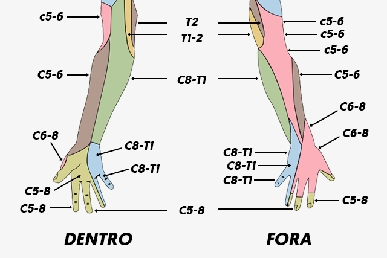

Conheça 10 nutrientes que garantem a saúde de quem já passou dos 50
Escrito por: Redação • Atualizado em: 29/06/2019
Algumas das causas mais comuns do formigamento nas mãos são a pressão nos nervos, dificuldades na circulação sanguínea, inflamações, abuso de bebidas alcoólicas, doenças mais sérias, como diabetes, AVC, esclerose múltipla ou infarto.
As mãos e braços são partes do corpo que contêm um grande número de terminações nervosas, o que permite ter movimentos mais delicados e sentir objetos e alterações de temperatura, por exemplo. Dessa forma, qualquer pequena alteração que possa afetar esses nervos e provocar formigamento, e isso nem sempre é grave ou deve ser motivo de preocupação.
Em qualquer caso, se o formigamento for intenso, demorar muitos dias para desaparecer ou se surgir associado a outros sintomas como cansaço excessivo, dor no peito ou dificuldade para falar é importante ir à consulta com o médico para iniciar o tratamento adequado.
1) Alterações na circulação
O formigamento nas mãos e nos pés pode ser causado por doenças circulatórias das artérias e veias, que geram ainda outros sintomas como dor e formação de úlceras. Além disso sentir as mãos e os dedos formigando ao acordar também pode indicar má circulação.
O que fazer?
O tratamento é feito a depender do tipo de deficiência na circulação de sangue e se houve comprometimento de veias ou artérias, e pode incluir o uso de meias elásticas, uso de remédios, como AAS, ou, até cirurgia, por exemplo. Para confirmar e decidir o melhor tratamento, o profissional indicado é o cirurgião vascular.
2) Pressão nos nervos
Os nervos que inervam os braços saem da medula, passando através da coluna, e chegam até as partes mais periféricas das mão e dedos. Ao longo do trajeto, estes nervos podem ser pressionados, seja por tumores, infecções ou vasos sanguíneos dilatados, como pela radiculopatia da coluna, que é quando os nervos são comprometidos ainda na coluna vertebral, por uma hérnia de disco, osteoartrose da coluna ou estenose do canal vertebral, por exemplo.
O que fazer?
É necessário procurar atendimento do ortopedista ou neurologista, de forma que seja realizado o tratamento de acordo com a causa da compressão do nervo, seja com fisioterapia ou cirurgia, por exemplo.
3) Enxaqueca com aura
Em muitas pessoas, a enxaqueca pode ser precedida por sintomas sensitivos, chamados de aura, que incluem formigamentos nas mãos, braços, pernas ou boca, por exemplo, além de alterações visuais, dificuldades na fala ou, até, fraqueza nos membros.
O que fazer?
O tratamento da enxaqueca é orientado pelo neurologista, e inclui o uso de medicamentos analgésicos, anti-inflamatórios ou anti-enxaquecosos para aliviar a dor, além de poder ser necessário o tratamento preventivo e medidas para evitar as crises, como evitar certos alimentos, cheiros ou falta de sono, por exemplo.
4) AVC
Embora seja uma situação mais rara, um dos primeiros sintomas do AVC é a sensação de formigamento em um braço ou mão. Além disso, outros sintomas comuns deste problema incluem boca torta, falta de força em um dos lados do corpo e dificuldade para falar.
O que fazer?
Em caso de suspeita de AVC deve-se chamar imediatamente uma ambulância, ligando o 192, ou ir imediatamente ao pronto-socorro.
5) Síndrome do túnel do carpo
Esta síndrome é a principal causa de formigamento nas mãos e acontece quando o nervo mediano, que inerva a palma da mão fica comprimido na região do punho, causando formigamento ou dormência que piora à noite, dificuldade para segurar objetos pequenos e sensação de ter os dedos inchados. Essa condição é muito comum durante a gestação, sendo a causa mais comum de formigamento nas mãos na gravidez.
O que fazer?
Dependendo da gravidade da compressão do nervo mediano existem exercícios que podem ser feitos para melhorar os sintomas, no entanto, a única forma de garantir a cura é fazer a cirurgia de descompressão do nervo. Confira orientações de fisioterapia no vídeo a seguir:
6) Esclerose Múltipla
A esclerose múltipla é uma doença autoimune que causa a degradação gradual das fibras nervosas do cérebro e da medula espinhal. Dessa forma, alguns sintomas incluem perda de força, cansaço excessivo, falhas de memória e formigamento em várias partes do corpo, que também pode ser acompanhada da sensação de queimação.
O que fazer?
O tratamento precisa ser feito com o uso de remédios que atrasam o desenvolvimento da doença, como o Interferon ou a Mitoxantrona. Por isso, é preciso consultar um clínico geral ou neurologista para diagnosticar a doença e iniciar o tratamento adequado.
7) Cisto sinovial
O cisto sinovial pode aparecer em qualquer das articulações da mãos, como punho ou dedos, e geralmente provoca o surgimento de um pequeno caroço na pele, preenchido por líquido da articulação, que pode acabar comprimindo os nervos e gerando formigamento na mão, assim como perda de força.
O que fazer?
Aplicar compressas geladas sobre o caroço pode ajudar a diminuir o inchaço e aliviar os sintomas, no entanto, podem existir casos em que pode ser necessário fazer aspiração do líquido ou usar anti-inflamatórios, devendo-se consultar o ortopedista se não existir melhora após 1 semana.
8) Deficiência de vitaminas
A deficiência de certas vitaminas, principalmente as vitaminas B12, B6, B1 ou E, pode provocar alterações nos nervos que cursam com formigamentos em diversas partes do corpo e alterações na sensibilidade, além de diversas outras como irritabilidade, cansaço e alterações psiquiátricas, por exemplo.
O que fazer?
Estas deficiências podem ser combatidas por meio de uma alimentação especial rica nestas vitaminas ou por meio da reposição de suplementos vitamínicos, por via oral ou intramuscular, como pode ser necessário no caso da vitamina B12.
9) Infarto
O formigamento ou dormência no braço esquerdo, ou mais raramente, no braço direito, pode ser um sintoma de infarto, principalmente quando piora ao realizar esforços ou está acompanhado de outros sintomas como dor no peito, falta de ar, mal estar ou suor frio.
O que fazer?
Em caso de suspeita de infarto, é necessário dirigir-se imediatamente ao pronto-socorro ou chamar o serviço de emergência móvel, no número 192, para que, caso seja confirmado, o tratamento seja iniciado o mais rapidamente possível, de forma a prevenir lesões irreversíveis no coração.
10) Diabetes descontrolada
Por vezes, a diabetes pode ser uma doença difícil de diagnosticar, especialmente se não provocar os sintomas clássicos como vontade muito frequente para urinar ou sede excessiva. Nos casos em que o tratamento não é iniciado, ou não é seguido da forma correta indicada pelo médico, os níveis de açúcar no sangue se tornam elevados na corrente sanguínea.
Quando os níveis de açúcar estão muito elevados, por muito tempo, uma das consequências é o surgimento de pequenas lesões nos nervos de várias partes do corpo e, por isso, a diabetes pode ser uma causa de formigamento nas mãos, braços, pernas ou pés, por exemplo.
O que fazer?
Quando existe suspeita de diabetes é muito importante ir ao endocrinologista para iniciar o tratamento com insulina, uma vez que apenas as alterações na alimentação podem não ser capazes de tratar o formigamento.
11) Hipotireoidismo
Quando o hipotireoidismo não é tratado corretamente pode causar lesões nos nervos que levam a informação entre o cérebro e o resto do corpo. Dessa forma, além de sintomas como perda de cabelo, ganho de peso ou sensação de frio constante, o hipotireoidismo também pode causar formigamento em várias partes do corpo, incluindo as mãos e braços.
O que fazer?
Quando já se sabe que se tem um problema na tireoide, ou quando existe suspeita, deve-se ir ao endocrinologista para iniciar o tratamento adequado com remédios que controlam a tireoide. Veja ainda algumas dicas para regular a tireoide com alimentação:
12) Epicondilite lateral
A epicondilite, também conhecida como cotovelo de tenista, é uma inflamação dos músculos e tendões do cotovelo que surge devido ao uso repetitivo da articulação, como acontece em jogadores de tênis ou pessoas que trabalham em linhas de montagem, por exemplo.
Nestes casos, pode haver uma dor intensa no cotovelo e perda de força em todo o braço, e o formigamento costuma surgir pela compressão do nervo ulnar, localizado no braço, devido à inflamação.
O que fazer?
A aplicação de compressas geladas no cotovelo pode aliviar os sintomas, porém, pode ser necessário fazer sessões de fisioterapia ou tomar anti-inflamatórios, como o Ibuprofeno, nos casos mais graves. Assim, é sempre importante consultar um ortopedista.
Como chegar ao diagnóstico do que é
O médico irá observar os sintomas que apresenta, quando eles surgem e qual intensidade. Hábitos no trabalho e história de vida podem ajudar a descobrir o que pode estar causando esse desconforto. Certos exames de sangue podem ser solicitados em caso de suspeita de diabetes, deficiência de vitaminas ou doenças do sistema imune, além disso, pode-se solicitar um exame de eletromiograma para avaliar a atividade dos músculos do braço e das mãos.
Qual tratamento indicado
O tratamento deve ser direcionado para a causa, e por isso varia muito. O médico pode recomendar apenas exercícios para aumentar a circulação sanguínea, a manutenção do peso ideal, sessões de fisioterapia podem ser útil em caso de comprometimento músculo-esquelético ou neuromotor, e uso de medicamentos, em caso de infecções ou doenças autoimunes, por exemplo. Em caso de abuso de álcool, a sua restrição também contribui para melhora da dormência.